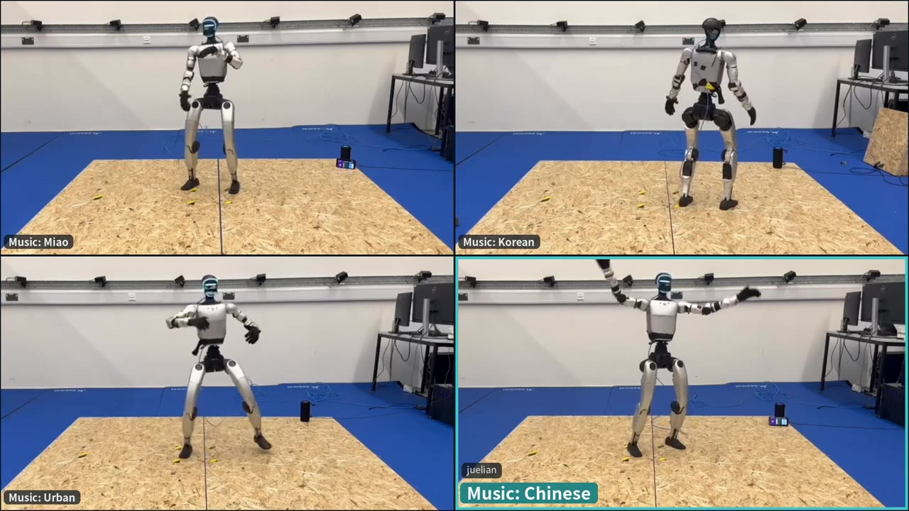

New submission
AHEADance: Anticipatory Humanoid Dance from Streaming Audio
Submitted to IEEE Transactions on Robot Learning (T-RL), 2026.
Anticipatory dance from streaming music, with reliability-weighted audio forecasts and continuation from committed motion.
Paper Project Video
BibTeX
@misc{peng2026aheadance,
title = {{AHEADance: Anticipatory Humanoid Dance from Streaming Audio}},
author = {Tianhu Peng and Yukun Wang and Lingfan Bao and Yiyang Jia and Chengxu Zhou},
year = {2026},
eprint = {2611.13370},
archivePrefix = {arXiv},
note = {Submitted to IEEE Transactions on Robot Learning (T-RL)},
url = {https://ihcr.github.io/AHEADance/},
}